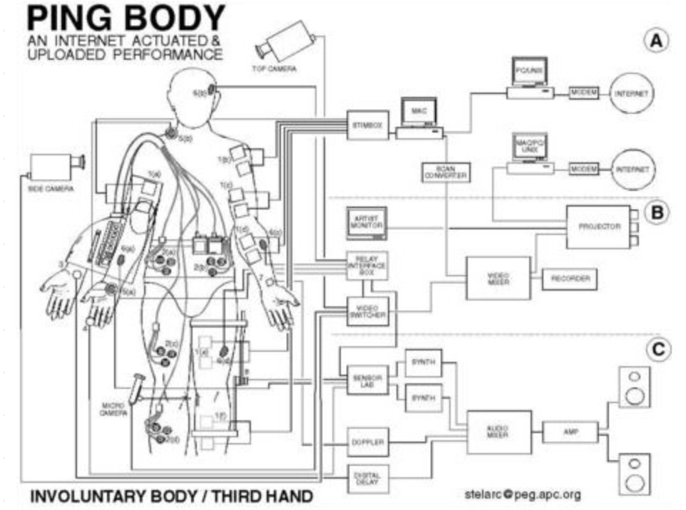
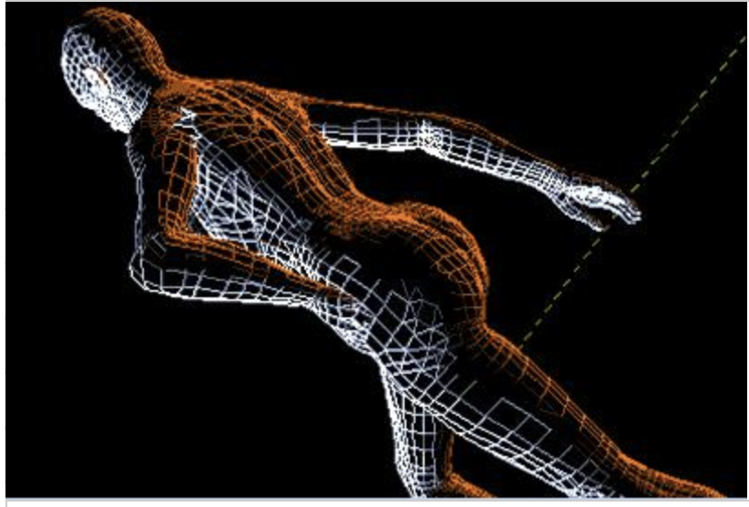
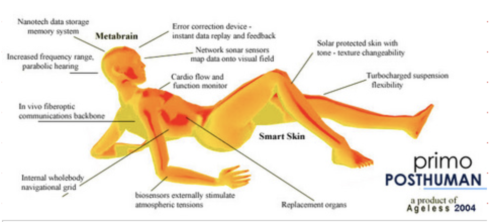

The works displayed in this exhibition are connected through themes of a futuristic human body, where the artists share a vision of the human anatomy altered by digital aspects. Stelarc’s Ping Body shows the body manipulated through global ping responses; LaPorta’s Future Body presents the female body without its material form but instead a digital body made of links and code; Vita More’s Primo Posthuman 3M+illustrates a body enhanced by technology, in pursuit of a futuristic, transhuman state. Created more than two decades ago, all three works are ahead of their time in the foresight of the human body shifting into the electronic, contrasting the organic way we currently interact with the web.
Ping Body by Stelarc (1996)
Ping Body, performed in 1996, is a display of Stelarc’s body movements being controlled by Internet activity through a muscle-stimulation system and ping responses. This performance contrasts the way how collective individuals currently operate the web, and instead the collective web controls the individual.
Future Body by Tina LaPorta (1999)
Future Body explores the boundaries between the physical body and the virtual, representing how our technological presence is simultaneously nowhere yet everywhere.
Primo Posthuman 3M+ by Natasha Vita More (2000)
Primo Posthuman 3M+ is a vision of a posthuman future, where the human body is enhanced by technology and surpasses the biological limitations.